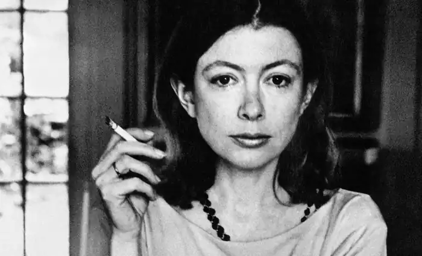
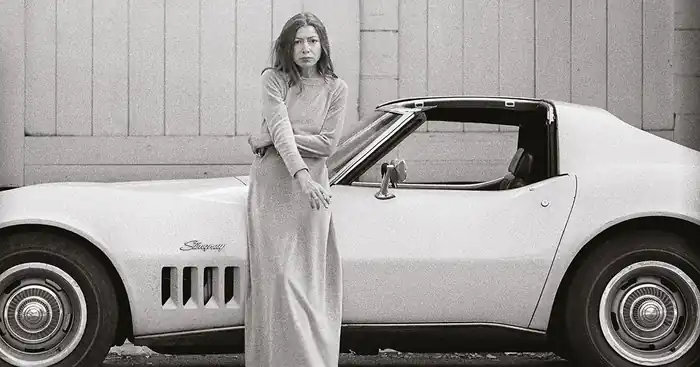
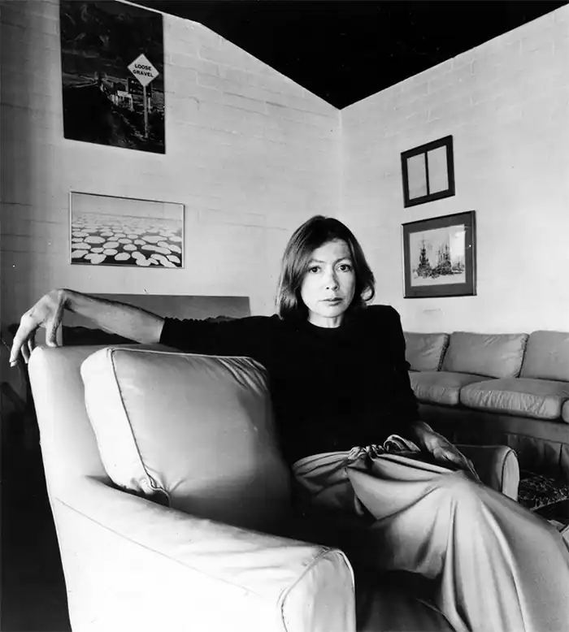

Джоан Дідіон (англ. Joan Didion; 5 грудня 1934) — американська письменниця, журналістка, сценарист.
Народилася 5 грудня 1934 в Сакраменто (шт. Каліфорнія). У 1956 закінчила Каліфорнійський університет в Берклі, з 1956 по 1963 працювала в журналі "Вог" (Нью-Йорк). За цей час написала роман "Біжить річка" (Run River), опублікований в 1963, викликав позитивні відгуки. Тоді ж познайомилася з письменником Д.Г. Данном, який став її чоловіком. У Каліфорнію вони повернулися в 1964.
Книга нарисів "Шкандибаючи в Бетлехем" (Slouching Towards Bethlehem) вийшла в 1968, після чого її репутація прозаїка і публіциста помітно зміцнилась. У заголовному нарисі висвітлено досвід спілкування письменниці з учасниками руху хіпі в Сан-Франциско. Назва навіяна рядками вірша Йітса "Друге пришестя": "Зв'язки розпалися, основа не тримає / Анархія вихлюпнулася на землю". У 1970 Дідіон опублікувала роман "Бери як є" (Play It as It Lays), героїня якого прагне відшукати сенс у безглуздому світі. Критика відзначала, що письменницю займає умонастрій сучасної жінки, і порівнювала Дідіон з Т.С. Еліотом. Тема дезінтеграції суспільства продовжена в романі "Книга спільної молитви" (A Book of Common Prayer, 1977). В умовах, коли "зв'язки розпадаються", героїня Шарлотта Дуглас шукає порятунку у вигаданій центральноамериканській країні. "Білий альбом" (The White Album, 1972), друга збірка есе Дідіон, схожа за тональністю з першою. Збірку названо в пам'ять знаменитого альбому "Бітлз", що увібрав в себе, на думку Дідіон, все сум'яття 1960-х років. "Сальвадор" (Salvador, 1983) став звітом письменниці про те, що вона побачила в країні, куди приїздила у 1982. В 1984 вийшов роман "Демократія" (Democracy). "Книга Маямі" (Miami, 1987) стала новою перемогою Дідіон-публіциста, яка зосередилась тепер на культурних, соціальних і політичних наслідках для Маямі і США, через притік біженців з Куби. "Після Генрі" (After Henry, 1992; в Англії вийшла під назвою "Сентиментальна подорож" — Sentimental Journey) – збірка, що включає 12 есе, що вільно групуються навколо трьох географічних точок, з якими пов'язана письменницька діяльність Дідіон – Вашингтона, Каліфорнії і Нью-Йорка. Після дванадцятирічної перерви Дідіон повернулася до прози, написавши роман "Останнє, що йому потрібно" (The Last Thing He Wanted, 1996). Дія відбувається в 1984, коли була опублікована "Демократія", і має деяку схожість з цим романом, але перенесена на інший аванпост американських зовнішньополітичних ігор – у Центральну Америку. Героїня книги Олена виявляється залученою в політичні інтриги і атмосферу змов, починаючи з убивства президента Кеннеді і закінчуючи скандальним справою "Іран-контрас". У співавторстві з Д.Г. Данном, Дідіон написала сценарії "Паніка в Нідл-парку" (Panic in Needle Park, 1971, приз Каннського кінофестивалю), "Бери як є" за своїм романом (1972) та ін.; спільно з іншими авторами – "Зірка народилася" (A Star is Born, 1976), "Правдиві визнання" (True Confessions, 1981, за однойменним романом Данна), а також "Близько до серця" (Up Close and Personal, реж. Д. Евнет, 1996, за участю Мішель Пфайфер і Роберта Редфорда). У 1996 отримала медаль Едварда Макдауелла.